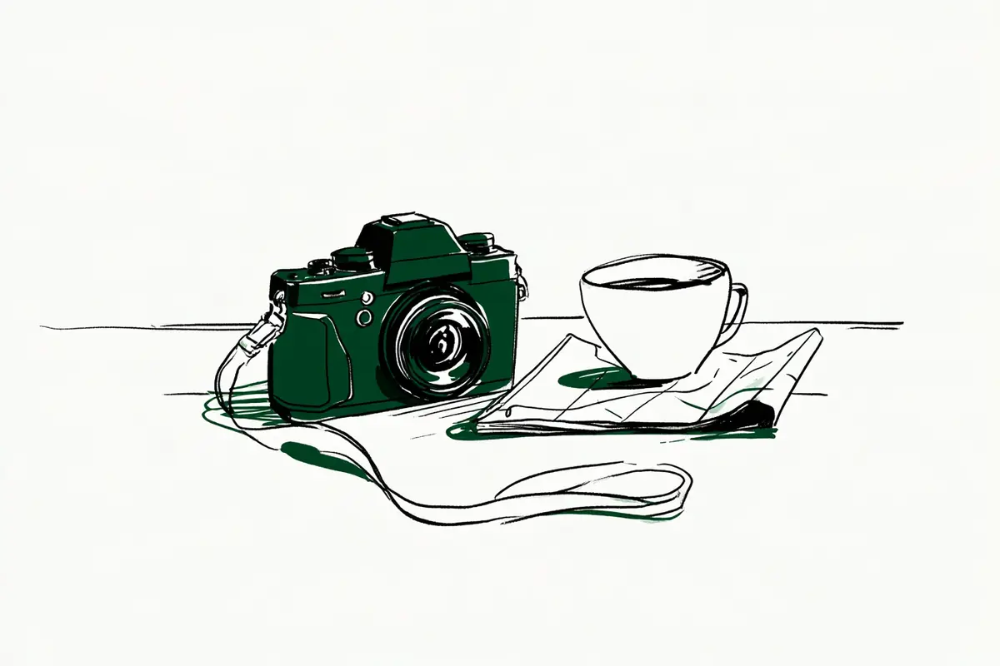

この記事には広告(アフィリエイトリンク)が含まれます。
現在地: 買う前に迷ってる
ニコン Z50IIの後悔・デメリット、買った人の不満と手放した理由

Z50IIを自分で買った・使っていると書いた60人のうち、買ったことを「後悔」と書いた人は1人で、同じ記事の後半では撮るのが楽しくなったと書いています。このサイトの基準(使わなくなった等)に当たる人はもう1人、近い人が2人です(後悔の節)。
- 本体を手放した・替えた人は15人。理由は多い順に、写りやときめきが3人、本体の手ブレ補正が2人、2台持ちのレンズや望遠との組み合わせが2人、機材の整理が2人、大きさとキットのレンズが1人で、5人は理由を書いていないかZ50II以外の理由でした。1人は一度替えて、またZ50IIに戻っています
- 公式の仕様に本体の手ブレ補正の記載はなく、質量は約550g(バッテリー・カード込み)、付属品に充電器はありません。不満はバッテリー・本体の手ブレ補正・重さ・暗い場所・AFなどに分かれ、どれが多いかは分け方で変わります(早見表)
- 手放した側の候補を先に全員読み、残りは途中で打ち切った集め方なので、割合としては読めません(数え方の偏り)
Z50IIは、ニコンが2024年12月13日に発売したミラーレス(言葉の意味)で、センサーはAPS-C(フルサイズより小さい規格。言葉の意味)。のぞき窓(電子ビューファインダー。言葉の意味)があります。ニコンの表記は「Z50II」で、書き手によっては「Z50Ⅱ」「Z50ii」「Z 50II」とも書きます。2019年発売の初代「Z50」は別の機種で、この記事では数えていません。2026年11月4日の時点で公式の製品一覧に載り、公式通販の4商品とも買い物かごに入れられる表示でした(公式の数字)。私はカメラを持っていないので、人の声を集めて整理する側で、買う・買わないはすすめません。
- まだ買う前で、後悔しないか知りたい → 早見表、「後悔」と書いた人、手放した・替えた人、手ブレ補正の節、公式の数字と値段
- 買ったばかりで、電池や重さが気になる → バッテリーと充電器の節、重さの節、そのほかのデメリット
- 使っていて物足りなくなった → 手放すか迷っている人と、Z30から替えてきた人
目次
- Z50IIのデメリット・不満の早見表: 種類、人数、その人がどうしたか
- Z50IIを買ったことを「後悔」と書いた人は1人: 替えた直後の後悔と、その後
- Z50IIを手放した・替えた15人: 行き先と理由を、人ごとに
- Z50IIのデメリット「ボディ内手ブレ補正がない」: 公式はレンズ側の補正と動画の電子補正
- Z50IIのデメリット「バッテリー」: 公式は約220〜250コマ、付属品に充電器なし
- Z50IIのデメリット「重さ・大きさ」: 公式は約550g
- Z50IIのそのほかのデメリット: 暗い場所・AF・1/4000秒・SDカード・レンズ・故障など
- Z50IIを書いた人の立場: 経験者、最初の1台の人、初代Z50から替えた人
- Z50IIに満足した人の声: 初代Z50を借りて比べた人、Z8より持ち出しやすい
- Z50IIの公式の数字と販売状況(2026年11月時点)
- 数え方と偏り
- Z50IIは買わない方がいい?読んだ範囲の答え
Z50IIのデメリット・不満の早見表: 種類、人数、その人がどうしたか
60人のうち不満を1つでも書いた人は43人で、本体・レンズを同じ細かさ(1つの話題=1行)で分けました。私の読み方で、1人が2つ以上に入ります。右の列は、その行でいちばん多かった結果の人の例で、1人ずつの話です。同数の行は結果の内訳を書きました。人数は集め方の影響を受けます(数え方の偏り)。
表の中の言葉の意味
- ボディ内手ブレ補正: 本体の中でセンサーを動かして揺れを消す仕組み。電子手ブレ補正は動画の画面を少し切り取って揺れを消す仕組み(言葉の意味)。MFレンズはピントを手で合わせるレンズ
- AF・被写体認識: 自動のピント合わせと、人や動物を見つけて合わせる機能(言葉の意味)。電子シャッターの歪みは、電子シャッターのときに動くものの形がゆがむこと
- 高感度のノイズ: 暗い場所で感度を上げたときのざらつき(言葉の意味)。シャッター1/4000秒は、仕様表にあるいちばん速いシャッター
- SDカード: 写真を記録するカード。2枚入る機種なら同じ写真を2枚に同時に残せる。プリキャプチャーは、シャッターを押す前の分まで残す機能。JPEG・RAWは記録の形式(言葉の意味)
- キット: 本体とセットのレンズ。単焦点は写る範囲が決まったレンズ(言葉の意味)。DXはニコンのAPS-C用レンズ、FXはフルサイズ用レンズの呼び名
| 種類(私の読み方) | 書いた人数 | その人がどうしたか(例) |
|---|---|---|
| 本体 | ||
| バッテリーの減り・残量の表示(予備が要る・3段階の表示が頼りにならない) | 14人 | 減り以外に不満はない → 売るか迷った末に、別の機種を下取りに出して残す |
| 本体の手ブレ補正なし(動画・MFレンズ・補正の付いていないレンズと暗い場所。うち3人は手放した・替えた人) | 10人 | 課題と知ったうえで買った → 使い続けている |
| 重さ・大きさ(少し重い・荷物になる・旅先やバイクでは大きい・Z30より重い) | 11人 | 荷物になる → 使い続けている |
| 暗い場所・高感度のノイズ(夜景・水族館・夜の飛行機・暗い店内) | 7人 | 手持ちの夜景で満足できない → Z5IIへ替えるかを相談 |
| AF(動くものでピントが外れる・雨粒に合う・大きくずれると動かない) | 4人 | 各1人: 手放した1・足した1・使い続けている1・相談1 |
| 電子シャッターの歪み | 3人 | 歪み → 使い続けている |
| 充電器が別売・USB充電まわり | 4人 | 充電中に本体を机に置くのが怖い → 充電器を買い足して使い続けている |
| シャッターが1/4000秒まで・明るい場所に弱い | 3人 | 1/4000秒までなのが残念 → 野鳥撮影の主力に |
| SDカードが1枚しか入らない | 1人 | 仕事の記録の控えが取れない → Z5IIへ |
| プリキャプチャーがJPEGだけ・画素数が前の機種と同じ | 2人 | JPEGだけ → 使い続けている |
| 写りがしっくり来ない・特別感やときめきがない・外観 | 4人 | 特別感がない → 手放した |
| 連写中の表示(コマ送りになる・暗転して見失う) | 2人 | 各1人: 使い続けている1・相談1 |
| 操作・表示(ボタンの位置・電源スイッチ・アプリ・設定が難しい・小指が余る・充電の表示・北米モデルの言語) | 6人 | 小指が余る → 部品を付けて使い続けている |
| 故障・不具合(エラー表示・フリーズ・動画のノイズ) | 3人 | 各1人: 使い続けている1・相談2 |
| 中身の書かれていない不満(いくつかあるが大きな問題ではない) | 1人 | 大きな問題ではない → 使い続けている |
| 出番が減った・持て余す | 3人 | 別の機種を買ってから使わなくなった → 売るのは惜しいと残す |
| レンズ | ||
| APS-C向けのレンズの本数・フルサイズ機とレンズを共用できない | 4人 | 各2人: 手放した2・使い続けている2 |
| キットのレンズ(広角側が足りない・望遠が足りない・写り・使わなくなった) | 4人 | 各1人: 替えた1・足した1・使い続けている1・相談1 |
並びは人数順ではありません。行の分け方で順位が変わります(バッテリーと充電器をまとめれば16人、手ブレ補正と暗い場所をまとめれば16人)。不満を書かずに手放した・替えた人が5人いて、表には入っていません(良い点も同様)。
60人の結果を、購入リンクの有無で分けて数えると、こうなります(判定の仕方は数え方の偏りに)。
| 結果(私の読み方) | 人数 | うち購入リンクがないと確かめられた書き手 |
|---|---|---|
| 満足 | 7人 | 3人 |
| 満足と不満の両方を書いて使い続けている | 21人 | 11人 |
| Z50IIを残して(または処遇を書かずに)別の機種を足した | 5人 | 3人 |
| 手放した・替えた | 15人 | 10人 |
| 手放す・替える・足すことを考えている | 8人 | 8人 |
| 困りごとだけで、評価はない | 4人 | 4人 |
両方の21人のうち2人と、足した5人のうち1人は、売るか・下取りに出すかを考えたうえで手元に残しています(迷っている人)。
Z50IIを買ったことを「後悔」と書いた人は1人: 替えた直後の後悔と、その後
「Z50II 後悔」の検索では、海外の掲示板(Reddit)や動画の「後悔」も上に並びますが、書き手を確かめられないので数えていません。数えた60人のうち、自分のことに「後悔」の語を使った人は5人です。Z50IIを買ったことを後悔したと書いたのが1人、後悔していないと書いたのが2人(2人ともカメラの紹介もしているサイトの書き手)、買った時期と、手放したあとについて後悔はないと書いたのが1人ずつ。Z50IIを買ったことを「後悔した」と書いた人は1人で、同じ記事の中で、その後悔は消えたと書いています。
せっかちさんは、10年使った一眼レフのD750が重くて手放し、2026年の初めに18-140のキットを買った人です。
こんなに電池持ち悪いの？！となり、うまく写真も撮れやしないし、買い替えたことを大変に後悔した。
少し暗い店内でピントが合わずブレたときにも、D750を先に手放したあとに後悔した、と。記事の後半では、撮りに出かけるうちに気持ちが変わっています。
今までの後悔や欝々とした気持ちが嘘のように写真を撮るのが楽しかった。
後悔していないと書いた2人は、Z30から替えたあこさんと、水族館で使う山ネズミさんで、どちらもカメラの紹介もしているサイトの書き手です(2025・2026年)。山ネズミさんは、一眼レフの本体の方がよかったかもと思うことはある、とも。
このサイトでは、後悔・使わなくなった・無駄だった、のどれかを本人が書いていれば後悔の側として数えます。せっかちさんのほかに当たるのは、野鳥用にZ50IIを買ったもみじ卍ゅうさん(カメラの紹介もしているサイトです)です(2026年)。
Z8を手に入れてからあまり使わなくなったZ50II。
売って別の機種にするのは惜しい、として手元に残しています。Z8を買った記事では、画素数・連写・電子シャッターの歪みでZ50IIでは厳しかった、と。2026年9月には全部手放すかもとも書いています。近い人が2人。Photographer nonさん(カメラの紹介もしているサイトです)は、Z8・Z6IIIのサブとして1台でほぼ足りると書いたうえで、2026年10月の記事ではこのごろ持ち出す回数が少ない、と。hoge₋pgさんは、2台で持て余したことを理由の1つにして手放しました(次の節)。「無駄だった」と書いた人はいません。数えなかった側の話は数え方の偏りに。
Z50IIを手放した・替えた15人: 行き先と理由を、人ごとに
本体を売った・手放した・下取りに出したと本文に書いた人は9人、別の機種に替えたとだけ書いた人は6人です。行き先は、ニコンのフルサイズが9人(Z5II 3人・Z6III 3人・Zf 2人・Z8)、他社が4人(ソニーのα7C II・富士フイルムのX-T5・ライカのQ3 43・キヤノンのコンパクト機)、代わりの機種を書いていない人が2人。15人のうち5人は購入リンクのあるサイトの書き手です。理由は、写りやときめきが3人、本体の手ブレ補正・2台持ちのレンズ・機材の整理が2人ずつで、下に多い順に並べました。
本体の手ブレ補正を挙げて、Z5II・α7C IIへ替えた2人
もらぞくさんは、16-50のキットを使い、軽さ・のぞき窓・握りに不満はなかった人です(2026年)。
Z5iiに乗り換えた一番の理由は、ボディ内手振れ補正・ダブルカードスロットがあることでした。
補正の付いていないレンズを使うとき、特に動画で本体の補正が欲しくなること、仕事で2枚に同時に記録して控えを取りたいことが理由でした。まなぞうさん(カメラの紹介もしているサイトです)は、発売日に買った人です。半年のレビューでは握りや色を評価しつつ、電池の容量と3段階の残量の表示、1/4000秒、本体の手ブレ補正なしを気になる点に挙げていました。その3か月後、本体とレンズ3本を下取りに出してα7C II(中古)にしました(2025年)。
つまり、Z50IIは「中途半端なポジション」になってしまったのです。
手元の4台と役割が重なったことが直接の理由で、本体の手ブレ補正なし、暗い場所のノイズ、動くものでピントを外すことも並べています。α7C IIを選んだのは、Z50IIに近い軽さでフルサイズ・AI認識のAF・本体の手ブレ補正がそろうからでした。
Z9との2台持ち、超望遠との組み合わせで、Z5II・Z6IIIへ替えた2人
Steadieさんは、Z9の予備・出張用にZ50IIを買い、単体では画質も軽さも気に入っていた人です(2025年)。
何か月か前に購入したばかりのNikon Z50iiを、手放すことにしました。
ただ、問題が出てくるのはZ9と2台持ちをしなければならない場面です。
APS-C用とフルサイズ用でレンズを共用できず、暗い屋内の舞台で明るいズームを使い回せなかった、と。キットの2本と単焦点も売りました(Z5IIを迎えた記事)。初電さんは、鉄道を撮る人で、2025年2月の最初のレビューでは写りは安定、電池の持ちを弱点に書いていました。1年後にZ6IIIを買っています(2026年)。
(Z50Ⅱと200-500は夏場の陽炎等考慮して退役しました。今までありがとう。)
退役の理由はこの1文だけで、Z6IIIを使ってから本体の手ブレ補正があることに気づき、Z50IIでは遅いシャッターの写真を何枚もボツにしていた、と振り返っています。
写りの好み・ときめきで替えた・手放した3人
桜橋さんは、2年で11台を使った人です。Z50IIは2025年1月に届き、18-140のキットで使いました。
でも時を同じくしてZ5とオールドレンズによる撮影体験を得てしまった僕には、この写りでは満足できませんでした。
握り・AF・小回りは認めたうえでの話で、当時の見方は偏見だったと添えています。1年後の11台の振り返りでは、別の言い方になっています(2026年)。
でも、なんか「特別感」がなかったんです。
行き先は書いていません(手元はZ5と富士フイルム)。Rollさん(カメラの紹介もしているサイトです)は、GR IIIを使ってレンズ交換式が欲しくなり、ダブルズームキットを買って数日で手放した人です(2026年)。
｢写真を撮っててワクワクしない……………｣
軽さ・握り・写り・値段は良いと認めたうえでの話で、撮って楽しいかを基準にZfを選びました。HAMANAKAさん(カメラの紹介もしているサイトです)は、動画も撮れる機種としてZ5からZ50IIに替えた人です(2025年)。
が、スチル性能がなんかイマイチしっくり来ず。
動画と色の機能は気に入っていたが、明るい部分が飛びやすいなど写真が合わず、Z5IIへ。Z50IIは欲しがった後輩の手に渡った、と(売ったか譲ったかは書いていません)。
大きさとキットのレンズでZ6IIIへ替え、一度離れてZ50IIに戻った1人
鑑真カメラの書き手(カメラの紹介もしているサイトです)は、2025年春に初代Z50からZ50IIにし、旅行や海外出張に持って行った人です(2026年)。
しかし、やっぱり微妙にデカいんです。
キットの16-50では、スマホよりどれだけ良く写るのか分からなくなった、とも。同じ年の夏にZ6IIIへ替え、Z6IIIも厚くて写りの差も感じずZRへ。ZRは握りとのぞき窓がなく1か月で売り、握り・のぞき窓・小ささが大事だったと気づいて、単焦点を付けたZ50IIをまた使っています(売ったとは書いていません)。本体の手ブレ補正は気にしない一方、記事の後半では、このごろは持ち出す機会も意欲も減り、いずれZ5IIなどに替えそうだ、とも書いています。
機材の整理で手放した2人
hoge₋pgさんは、重いZ6IIに負けて2025年の夏に買った人です。年末の機材の棚卸しでは外観の安っぽさ以外は良く、被写体認識はZ6IIにない、と書き、2026年5月に手放しました。
②Z50Ⅱの大きさですら、旅行先では苦。
AFではZ50Ⅱが圧勝なんだけどなぁ、すまなんだ。
理由は5つで、Zマウントなのに小さいセンサーであること、2台で持て余すこと、レンズの外装、動画も写真もキヤノンのコンパクト機(レンズを替えられない小さなカメラ)PowerShot V1で足りること。電子レンジマンさん(カメラの紹介もしているサイトです)は、ZRなどと並べて日常用に使っていた人です。2026年4月に機材の整理の折にマップカメラで下取りに出し、超広角のズームにしました。理由は機材の整理とだけ書き、手放す前のZRのレビューでは電池の持ちはZRより短い、と。
理由を書いていない・Z50II以外の理由の5人
Blue-Heavenさんは、X100VIやレンズと一緒にZ50IIを手放してZ6IIIにした人です(2026年)。Z50IIの話は次回とされ、取得した記事一覧に続きはありません。npcさんは、カメラを始める頃に周りがすすめていたZ50IIを最初の1台として買い、憧れた写真家と同じ機種を使いたくてZfにしました(2026年)。
そのあと、私はZ50IIを手放して、Zfに変えた。
yoriknitさんは、鳥を撮る用にZ50IIを使い、ライカのQ3 43を迎えるときにfpL・Z50II・レンズを手放しました(2025年)。
さすがに買い増しとはいかないので、考えに考えに考えて、fpL と Z50II とレンズ何本かを手放しました。
Z50IIの評価は書いていません。あまささんは、Z8に替えたとだけ書き、Z8のレビューで暗い場所の写りはZ50IIとほぼ同じ、と(2026年)。daily frameさんは、6年で7台を使い、大きな機種を持ち出す回数が減ってZ50IIを選んだ人です(2026年)。
Z50IIを使っている間に、自分が撮るものも少しずつ変わってきた。
日常の写真が中心になって富士フイルムの色が欲しくなり、X-T5へ。Z50IIへの不満は書いていません。
手放すか迷って残した3人、替えるか・足すかを相談した8人、Z30から替えてきた7人
迷って残した3人。もみじ卍ゅうさんは上の節に。夢玉さんは、キットの16-50と50-250に24mmを足し、Z5IIも買った人で、富士フイルムのX-Pro2とどちらを売るか迷いました(2025年)。
最初はZ50IIを売り払おうと思ったのです。
扱いやすさと、APS-C向けの新しいレンズの発表で残し、X-Pro2を下取りに出しました。電池の持ち以外に不満はない、と。ばさんは、最初の1台としてダブルズームキットを買った人です。10か月の記事では、悪かった点の最初に電池の減り、ほかに電源スイッチの緩さ、アプリ、本体の手ブレ補正なし、広角側の物足りなさを書いています。2026年の夏に本体の補正や速いシャッター、握りを欲しい機能に挙げたあと、Z6IIIを足しました。Z6IIIでは被写体認識のAFが当たる、とも。
多分Z50II下取りに出せばこれと合わせて50-400ぐらいは買えそうなんだけど、撮っても別に撮可でしか使わんのよな
知恵袋で替えるか・足すかを相談した8人は全員が質問者です。Z5IIへ替えるかが2人で、どちらも暗い場所が理由です(2025年)。
理由はZ50IIでは暗所撮影（手持ちでの夜景、夜ポートレート など）の時に満足出来ないからです
この質問者は3か月後のレンズの質問で、手持ちの一覧にZ50IIを売る、と書いています。水族館や夜景で撮れないことがよくある質問者も同じ機種を考えています。ほかは、バイクで運ぶには大きいのでコンパクト機に、風景のためにZ6IIかZ7へ、夜の飛行機のためにZ5IIかZ6IIへ、フルサイズを望むようになった、Zfを足すか、フリーズが多くて一眼レフに戻るか。その後どうしたかは書かれていません。売るといくらになるかを無料で知る方法は売るなら、まず無料で相場を知るに。
別の機種を足した5人は、ばさんのほか、Z8を足したケイさん、Z7IIを足したアセアンさん、動画の長回し用にコンパクト機を足したふじきさん(2人ともカメラの紹介もしているサイトです)、重さでコンパクト機を足したぬんさん(重さの節)です。
Z30から替えてきた人は7人(あこ・遠藤・sat・じゅん@・n2hs31・ケイ・Daka-M Project。遠藤さんはカメラの紹介もしているサイトです)で、Z30を手放した側の話はZ30の記事に。7人のうち、Z50IIを手放した・替えた人はいません。初代Z50から替えてきた6人は立場の節に。
Z50IIのデメリット「ボディ内手ブレ補正がない」: 公式はレンズ側の補正と動画の電子補正
仕様ページの手ブレ補正の欄は、レンズ内手ブレ補正が「レンズシフト方式（VRレンズ使用時）」で、動画の機能に「電子手ブレ補正」とあります。本体のセンサーを動かす補正の記載はありません。これを不満や気になる点に書いた人は10人で、うち手放した・替えた人は3人(もらぞく・まなぞう・初電。上の節)、残り7人は使い続けているか、別の機種を足しています。
satさんは、Z5IIの予備としてZ30から替えた人です(2026年)。
Z50IIのよく言われる課題はバッテリー持ちが悪いとボディ内手振れ補正がないです。
どちらも妥協できる、と。じゅん@さん(カメラの紹介もしているサイトです)は、フルサイズ用で補正の付いていない24-120mmを暗い場所で使うのは厳しかった、と(2025年)。はるかさん(カメラの紹介もしているサイトです)は、Z5IIと組み合わせて旅行用に展示品を買った人です(2026年)。
Z50IIにはボディ内手ブレ補正がないし、バッテリーもちもそんなによくはない。
それでも写りとピント合わせには満足している、と。もみじ卍ゅうさん・さぼ店長(2人ともカメラの紹介もしているサイトです)、ばさんも挙げています。逆の声は、鑑真カメラの書き手とmossariwebの書き手が気にならないと書き(2人ともカメラの紹介もしているサイトです)、購入リンクのない書き手ではshiitoさんが、買う前に悩んだが画面で見る分には不便を感じない、と(2026年)。本体の補正がないのは仕様で、補正の付いていないレンズを暗い場所で使うか、動画を撮るか、ピントを手で合わせるレンズで遊ぶかで効き方が変わります。暗い場所で補正なしの機種がブレる仕組みはオートなのにブレるのはなぜ?に。
Z50IIのデメリット「バッテリー」: 公式は約220〜250コマ、付属品に充電器なし
公式の静止画の撮影可能コマ数は、のぞき窓だけで使うか画面だけで使うか、省電力の設定で4通りあり、約220〜250コマ。業界の統一基準(CIPA)に準拠した値で、初期設定で30秒おきに撮る条件です(公式の数字)。不満に書いた人は14人。手放した・替えた人で、電池を手放した理由に挙げた人はいません(初電さんとまなぞうさんは気になる点に書いていました)。
Daka-M Projectの書き手は、Z30から入れ替えて野鳥を撮る人です(2026年)。
Zfcに比べるとZ50IIのバッテリーの減りはかなり早く、予備バッテリーが無いと１日持ちません。
知恵袋では、安い予備の電池を尋ねた質問者がいます(2025年)。
Z50II を使っているのですが、先日三、四時間ほど撮影したら、すぐにバッテリーがなくなり撮影できなくなりました。
HAJさんは、いまいちな点の1つ目に減りの早さを挙げ、1年後も買ってよかったと振り返っています(2025・2026年)。mossariwebの書き手は、3か月の感想で、残量の表示が2から急に1に落ちることをいちばんの弱点に挙げています(2025年)。ほかの8人のうち4人は購入リンクのあるサイトの書き手で、2〜3時間で空になった体験、予備を2個持つ話などです。体験の時間と公式のコマ数は条件が違うので比べられません。予備の電池を持って行った人・1個で足りた人の声は旅行の記事の予備バッテリーの節に。
充電器。 4人。公式の付属品の欄にはバッテリーと充電用のUSBケーブルがあり、充電器は載っていません。ACアダプターEH-8Pは別売です(公式の数字)。NEKOさん(カメラの紹介もしているサイトです)は、初代Z50から発売日に替えた人です(2025年)。
充電中に大切なカメラを机の上に放置しないといけないのが結構怖い！
別売の充電器を買った、と。ふじきさん(カメラの紹介もしているサイトです)は、本体にケーブルをつないだままの充電が気になり、充電中の表示も見づらい、と(2026年)。
Z50IIのデメリット「重さ・大きさ」: 公式は約550g
公式の質量は約550g(バッテリーとカード込み)です。重さや大きさを不満に書いた人は11人で、手放した・替えた人のうち理由に挙げたのはhoge₋pgさんと鑑真カメラの書き手の2人(上の節)。軽さ・小ささを良い点に書いた人もいます(良い点は数えていません)。
ぬんさんは、最初の1台として中古の本体に単焦点と18-140を付けた人です(2026年)。
でも、カメラを持ち出す喜びを知れば知るほど、気になってくるのはその重たさと存在感です。
道端で構えるのに気後れする、出かけた先で遊ぶときには邪魔、としてコンパクト機を足し、Z50IIは表現したい日の1台として残しました。shiitoさんは、18-140のキットを買い、撮る楽しさが増えたと書く人です(2026年)。
一番困ったことは、やはり荷物になることです。
設定の難しさと、ほかのメーカーの同じ大きさの機種と比べた重さも挙げ、握りがあるので重さは感じにくい、とも。Futatabiさんは、Z5を売ってZ50IIにし、24mmを付けてGRのように使うと大きさと重さでは不利、と(2026年)。Kazさんは、スマホから替えて、雑に扱えないことと小物で荷物が増えることを弱点に(2026年)。知恵袋では、バイクで運ぶには大きい、として手放す予定の質問者が1人(迷っている人)。質量の読み方は重さの記事に。
Z50IIのそのほかのデメリット: 暗い場所・AF・1/4000秒・SDカード・レンズ・故障など
暗い場所・高感度のノイズ。 7人。Steadieさんとまなぞうさんは上の節、せっかちさんは後悔の節、知恵袋の3人は迷っている人に。ログカメラの書き手(カメラの紹介もしているサイトです)は、Z9との差にAPS-Cの高感度のざらつきを挙げています(2024年)。
AF・被写体認識。 4人。まなぞうさんは上の節、ばさんは迷っている人に。もみじ卍ゅうさんは、大粒の雨の日に手前の雨粒に焦点を取られたことを1つだけ挙げています。知恵袋の質問者は、ピントが大きくずれると動かない、と(2025年)。
しかしフリーズやAFの不安定さは腕ではカバーできません。
AFを良い点に書いた人もいます(良い点は数えていません)。
電子シャッターの歪み・1/4000秒・SDカード。 歪みは3人(もみじ卍ゅう・ば・KENICHI CANADA)。仕様のシャッタースピードは「1/4000～30秒」で、明るい場所に弱いと書いた人が3人(まなぞう・mossariweb・Daka-M Project)。SDカードが1枚なことはもらぞくさんの1人で、上の節に。
レンズ。 APS-C向けのレンズの本数は4人(Steadie・hoge₋pg・夢玉・mossariweb)。キットのレンズは4人で、ばさんの広角側、鑑真カメラの書き手の写り、山ネズミさんの使わなくなったキットのレンズ、それに最初の1台として16-50のキットを買った知恵袋の質問者です(2026年)。
特にもやっとしているのは、アップができないこと・・・。
パレードなど遠くのものを大きく撮りたい、スマホの方がきれいなのでは、と。
写り・画素数・プリキャプチャー。 写りで替えた人は上の節に。NEKOさんは、画素数が初代Z50と同じ2088万画素で切り抜くには物足りないこと、RAWではプリキャプチャーが使えないことを残念な点に(2025年)。Daka-M Projectの書き手もJPEGだけなことを挙げています。
操作・表示。 6人。KENICHI CANADAさんは、北米で買った人です(2025年)。
Z50IIは北米で購入する場合、日本語が言語設定にありません。
ボタンの位置に慣れないこと、電子シャッターの歪みも挙げ、全体には大変満足、と。rurokame_z502さんは、握ったときに小指が余るのを部品を付けて解決し(2026年)、ばさんは電源スイッチとアプリ、shiitoさんは設定の難しさ、ふじきさんは充電の表示、mossariwebの書き手は買った直後の記事でボタンの押しにくさとクラウドの設定の手間です。
故障・不具合。 3人。山ネズミさんは、2025年3月に買い、2026年6月に旅先でエラー表示が消えず、修理に1か月かかると言われて同じZ50IIをもう1台買いました。知恵袋では、1日に5〜6回フリーズする質問者(上の引用)と、動画の色をあとで整える撮り方(N-Log)でノイズが多く、店頭の機体と比べて故障を疑った質問者(2026年)。故障で手放した人は、この集め方では見つかりませんでした。
連写中の表示・のぞき窓。 連写でコマ送りのように見えて被写体を見失う、と相談した質問者が1人(2025年)。のぞき窓については、連写中に暗転して動くものを追えないことを、ログカメラの書き手がZ9との差に挙げています。
Z50IIを書いた人の立場: 経験者、最初の1台の人、初代Z50から替えた人
経験者(上位機や他社機を併用、前に別のカメラを使った人)は40人。最初の1台と本文で確定できる人は5人(ば・アセアン・ぬん・npc・知恵袋の質問者1人)で、3人は別の機種を足し、1人は遠くが撮れないと相談、1人(npcさん)は憧れた写真家と同じZfにしたくて手放しました(Z50IIへの不満は書いていません)。どちらとも分からない人が15人。手放した・替えた15人は、経験者12人・最初の1台1人・分からない人2人です。
初代Z50から替えてきた人は6人(ろんすた・Photographer non・goren3・鑑真カメラ・NEKO・さぼ店長)で、うち5人は購入リンクのあるサイトの書き手です。初代から替えて残念な点に挙げたのは、充電器が付いていないこと・画素数が同じこと(NEKO)、持ち出す回数が減ったこと(Photographer non)で、鑑真カメラの書き手は一度離れて戻っています(数え方の偏り)。
Z50IIに満足した人の声: 初代Z50を借りて比べた人、Z8より持ち出しやすい
満足と読んだ7人の内訳は、経験者6人、分からない人1人で、購入リンクのあるサイトの書き手が4人います。不満を1つでも書いた人は「両方」に入れたので、人数は分け方で変わります。満足側は人数の上限で打ち切ったので少なく、打ち切った24人には満足が9人(うち購入リンクのない人6人)います(数え方の偏り)。本文に出したのは購入リンクのない2人で、残りは読んだ一覧に。
goren3さんは、初めてのニコンが中古の初代Z50で、Z50IIを借りて試した人です(2026年)。
ご機嫌だったのですが、Z50Ⅱをレンタルしてビックラポンして買い替えました。
のちにZ30を予備機にしています。nyamoyaさんは、Z8を持ち、Z30を買って手放したこともある人です(2026年)。
Z8だと持ち出すのだるくなりますが、Z50Ⅱではそれがないのがいいです。
選んだいちばんの理由は小ささと軽さで、写りも不満なし、と。n2hs31さんは、Z30から入れ替えて届いた日の記事でAFの進化に驚いた、と書き、評価はまだ薄い段階です(2026年)。
Z50IIの公式の数字と販売状況(2026年11月時点)
声に出た不満を、ニコンの公式ページの数字と並べました。仕様ページ・製品ページ・製品一覧・公式通販のニコンダイレクトから、2026年11月4日に取得した値です。
| 項目 | 公式の記載 |
|---|---|
| 発売 | 2024年12月13日 |
| 質量 | 約550g(バッテリーとメモリーカードを含む、ボディーキャップを除く)。本体のみ約495g |
| 撮影可能コマ数(静止画) | 約220〜250コマ(のぞき窓だけ・画面だけ、省電力の設定で4通り。画面だけ・省電力ONで約250コマ)。業界の統一基準(CIPA)に準拠、初期設定で30秒間隔に撮る条件 |
| 手ブレ補正 | レンズ内手ブレ補正: レンズシフト方式(VRレンズ使用時)。動画に電子手ブレ補正。ボディ内(センサーを動かす)補正の記載なし |
| ファインダー | 電子ビューファインダー、0.39型、約236万ドット |
| 背面モニター | バリアングル式(横に開いて回る方式)の3.2型、約104万ドットのタッチパネル |
| シャッタースピード | 1/4000〜30秒 |
| 充電・付属品 | 付属品はバッテリーEN-EL25a・USBケーブル・ストラップなど。ACアダプターEH-8Pは別売。付属品の欄にバッテリーチャージャーの記載なし |
| 端子 | USB Type-C、外部マイク入力(3.5mm)、ヘッドホン出力、HDMI(Type D) |
| 防塵防滴 | 本体の記載なし(不満に書いた人は、この集め方では見つかりませんでした) |
| センサー | APS-C(DXフォーマット)、有効2088万画素 |
| 現行の構成 | ボディ、16-50 VR レンズキット、18-140 VR レンズキット、ダブルズームキット。製品一覧のミラーレスカメラに掲載 |
| 公式通販の価格(取得日時点) | ボディ160,600円、16-50 VR レンズキット182,600円、18-140 VR レンズキット215,600円、ダブルズームキット214,500円 |
同じ日のニコンダイレクトの表示では、4商品とも「買い物かごに入れる」のボタンがあり、在庫の欄は空欄で、納期の文言は商品ページにありませんでした。仕様と価格は変わるので、表の数字も自分で仕様ページで確かめてください。
手放した・迷った人の理由は、写りやときめき、本体の手ブレ補正とSDカード、2台持ちのレンズ、機材の整理、大きさとキットのレンズ、暗い場所、それに売ってフルサイズにするか・コンパクト機にするか、でした。楽天市場の検索リンクを1つ置きます。置く条件は、購入リンクのない本人の体験が2人以上あり、不満の側(満足以外の結果の人)の声があることで、Z50IIは当てはまりました。私のおすすめではなく、いまの値段や在庫を確かめるためのリンクで、在庫と価格は日ごとに変わります。下のリンクは『Nikon Z50II』の名前で楽天市場を検索します。
数え方と偏り
数えたのは、自分でZ50IIを買った、または使っていると書いた60人です。内訳はnote40人・個人ブログ8人、知恵袋12人(全員が質問者)。初代Z50・Z30・Z fc・Z5II・Zf・Z6IIIの人は数えず、この機種から替えた人・へ替えた人は数えています。家族の機体・借りただけ・買う前の相談・購入の報告や作例だけの人は数えていません。分け方は私の読み方です。
今回は人数の上限を60人にして、手放した・替えた・手放しを考えた側の候補を先に全員読み、残りは満足側をnoteの検索の並び順と検索の上位から足して打ち切りました。打ち切った24人は本文と続きの記事まで読んであり、全員がZ50IIを使い続けています(満足9人・両方11人・足した4人。電池の持ちを不満に書いた人が6人)。そのあと、せっかちさんを例外で足し、ほかのサイトのレビューを記号で引く書き方で本人の体験と確かめられなかったnoteの書き手1人(Z5IIに替えた人で、理由は本体の手ブレ補正と2枚のカードと書いていた人)を外して60人にしました。だから60人の中の手放した側は実際より多く見えていて、後悔・不満・最初の1台の人数も割合としては読めません。
偏りは、ほかに4つあります。
- 探した語の偏り。「後悔」「デメリット」「手放した」「売った」「買い替え」「乗り換え」「下取り」「さよなら」などの語と、次の機種(Z5II・Z6III・Zf・Z8など)の名前からも探しました。手放した・替えた15人のうち題で見つかったのは3人で、残る12人は次の機種の購入記・機材の整理・カメラ遍歴の記事の中にいました。行き先の人数は、逆に探した機種の名前の影響を受けます
- 「後悔」の語で検索すると、照合できないReddit・動画と、販売店やレンタル会社のページが上に並びます(2026年11月4日、私の検索で)。1〜3ページ目に出る本人の記事は7人分で、6人は使い続けていて、1人(まなぞうさん)はその記事の3か月後に下取りに出しました。7人のうち5人は購入リンクのあるサイトの書き手です
- 購入リンクか広告の表記があるサイトの書き手21人には「(カメラの紹介もしているサイトです)」と添えています。本文に商品リンクや広告の表記があるかを保存したページで機械的に確かめ、noteやはてなが自動で付けるタグとAmazonの共有リンクだけの人は「なし」に、同じ書き手の別の記事にある人は「あり」にしました
- 経験者が40人います。声の年は2024年12月〜2026年10月で、2025年にZ5IIが出てからの記事に手放した側が偏ります(Z5IIへ3人)
数えなかったのは、本人の購入体験が本文にない選び方・比較・一般論の記事(名前は読んだ一覧に)と伝聞、販売店・レンタル・買取店・メディアのページ、販売の今後についての噂、照合できないReddit・YouTube・X・Instagram、それに価格.comの掲示板とレビュー(規約が私的・非営利目的に限るため、引用せず人数にも入れていません)です。
Z50IIは買わない方がいい?読んだ範囲の答え
買わない方がいい、とも、買った方がいい、とも、読んだ声からは言えません。同じ機種に、補正の付いていないレンズを使うときに本体の手ブレ補正が欲しくなってZ5IIへ移った人と、課題と知ったうえで買って妥協できると書く人がいます。大きさが旅先では苦になって手放した人と、Z8より持ち出しやすいからと選んだ人も、同じ約550gを別の形で書いています。
読んだ声にあった形は3つです。本体の手ブレ補正や2枚のカードが要る使い方になって、同じニコンのフルサイズへ替えた人。別の機種を手に入れて出番が減り、手放した人と、残した人。写りがしっくり来ない、ときめかない、別の機種の色が欲しくなった、で手放した・替えた人。ここに書いたことは読んだ声の整理で、公式の数字は上の表から自分の目で確かめてください。買う前の順番は初めてのカメラ、最初の一台は何で決めた?に。
ほかの機種の声と、買う前の確認
- キヤノン EOS R50の後悔・デメリット、買った人の不満と手放した理由
- ソニー α6400の後悔・デメリット、買った人の不満と手放した理由
- ニコン Z fc(Zfc)の後悔・デメリット、買った人の不満と手放した理由
- OM-D E-M10 Mark IVの後悔・デメリット、不満と手放した理由
- キヤノン EOS R10の後悔・デメリット、買った人の不満と手放した理由
- 富士フイルム X-M5の後悔・デメリット、買った人の不満と手放した理由
- ニコン Z30の後悔・デメリット、買った人の不満と手放した理由
- ソニー ZV-E10 IIの後悔・デメリット、買った人の不満と手放した理由
- 初心者が最初に買ったカメラ、口コミで多かった機種と後悔の声
- カメラを買うか迷ったら読む順番 ― 買う前に確かめる6つ
次に読むなら
この記事で読んだ136件
体験談127件(60人の出典。note 95件、個人ブログ19件、知恵袋13件)、数えなかったnote・ブログ、公式ページ9件に分けています。本文で使わなかったものには注記しました。
体験談95件(note 40人の出典)
- note(Steadie)「さよなら、Nikon Z50ii。僕がフルサイズ専念を決めた理由」(経験者、Z9と2台持ちでレンズを共用できない・暗い屋内で明るいレンズが欲しい、手放した(売却)、Z5IIへ、2025年)
- note(Steadie)「📸ようこそ、Nikon Z5II。」(同じ人、2025年)
- note(Steadie)「Nikon Z50IIに対する自分のリアクション」(同じ人、2024年。本文では使っていません)
- note(hoge₋pg)「Z50Ⅱ手放す前の外観比較」(経験者、旅先では大きさが苦・小さいセンサーへの引っかかり・2台で持て余す・外観・レンズの外装、手放した(機材の整理)、キヤノンのPowerShot V1へ、2026年)
- note(hoge₋pg)「カメラ機材の棚卸し(素人)」(同じ人、2025年)
- note(Blue-Heaven)「気がついたら15ヶ月」(経験者、Z50IIを手放した理由は次回とされ続きの記事がない、手放した、Z6IIIへ、2026年)
- note(Blue-Heaven)「振り返りの前に」(同じ人、2025年。本文では使っていません)
- note(npc)「声を聞いてた、写真展」(最初の1台、理由はZ50II以外(憧れた写真家と同じ機種を使いたかった)、手放した、Zfへ、2026年)
- note(npc)「写真を始めた理由のひとつに会いに行った」(同じ人、2026年)
- note(npc)「Zfと過ごした4ヶ月で、撮る速度が変わった」(同じ人、2026年。本文では使っていません)
- note(桜橋)「スペックで買って、感情で売った。11台それぞれの別れの理由」(経験者、特別感がない・フルサイズと古いレンズの写りに気持ちが移った、手放した(行き先の記述なし)、2026年)
- note(桜橋)「X-E4というカメラを、性能じゃなくて見た目で買ったら人生が変わった」(同じ人、2026年。本文では使っていません)
- note(桜橋)「『軽量コンパクトが正解』と言い続けてきた僕が、11台を経て辿り着いた答え合わせ。」(同じ人、2026年。本文では使っていません)
- note(桜橋)「なぜ僕はFUJIFILMを選んでいるのか」(同じ人、2026年。本文では使っていません)
- note(桜橋)「Nikon Z50Ⅱの話」(同じ人、2025年)
- note(桜橋)「私のカメラ遍歴(2024〜2025)Canon・Nikon」(同じ人、2025年)
- note(電子レンジマン)「Nikon Z50II×NIKKOR Z 14-30mm f/4SでYouTube動画撮影環境を刷新しようとしたがα7 V×SEL16F18Gに戻った話」(経験者、電池の持ちがZRより短い(手放す前のZRのレビュー)、手放した(機材の整理、マップカメラで下取り)、2026年。カメラの紹介あり)
- note(電子レンジマン)「Nikon ZR長期使用レビュー｜デメリットにより感じる限界とZ5IIが欲しくなってきた問題」(同じ人、2026年。カメラの紹介あり)
- note(電子レンジマン)「GRかiPhoneか、コンパクトなカメラアイテムの選択肢に悩む」(同じ人、2026年。本文では使っていません。カメラの紹介あり)
- note(yoriknit)「身の程知らず。 part.2」(経験者、Z50IIの評価の記述なし、手放した、ライカのQ3 43へ、2025年)
- note(yoriknit)「私のカメラ。 ｜ 2025」(同じ人、2025年。本文では使っていません)
- note(yoriknit)「おかえり Z 。 ｜ Nikon Z5II」(同じ人、2026年。本文では使っていません)
- note(Roll)「GR IIIをきっかけにNikon Zfを購入した」(撮っていてワクワクしない、手放した、Zfへ、2026年。カメラの紹介あり)
- note(Roll)「Nikon Zfは重いし大きい？東京で使って分かったリアルなデメリット」(同じ人、2026年。本文では使っていません。カメラの紹介あり)
- note(HAMANAKA)「Z5IIはすごいぞ」(経験者、写真がしっくり来ない・明るい部分が飛びやすい、替えた(本体は欲しがった後輩へ)、Z5IIへ、2025年。カメラの紹介あり)
- note(HAMANAKA)「いまさらだけど、Nikon Z8 使用１年レビュー」(同じ人、2025年。本文では使っていません。カメラの紹介あり)
- note(HAMANAKA)「帰ってきたZ5ii」(同じ人、2025年。本文では使っていません。カメラの紹介あり)
- note(もらぞく)「Z5ii…こいつなんでも出来過ぎる…！入門か中級、何なら上級者まで。【半年使用レビュー】」(本体の手ブレ補正・SDカード1枚、替えた、Z5IIへ、2026年)
- note(あまさ)「【My New Gear！】デジタル人間が、アナログと出会う。」(経験者、理由の記述なし、替えた、Z8へ、2026年)
- note(あまさ)「【Z8】写真のメイン機を長期使用レビュー！」(同じ人、2026年)
- note(初電)「Z6Ⅲ買ったのでレビューしようか。」(経験者、電池の持ち・本体の手ブレ補正(替えたあとに気づいた)、替えた(望遠と一緒に退役)、Z6IIIへ、2026年)
- note(初電)「鉄によるZ50Ⅱレビュー」(同じ人、2025年)
- note(初電)「―APS-Cを言い訳にしない― Z50Ⅱと200-500で頑張る超望遠闇鉄」(同じ人、2025年。本文では使っていません)
- note(daily frame)「6年でカメラ7台。結局、富士フイルムに戻ってきた。」(経験者、Z50IIへの不満の記述なし(撮るものが変わり富士フイルムの色へ)、替えた、X-T5へ、2026年)
- note(daily frame)「自分に合うカメラってなに？」(同じ人、2026年。本文では使っていません)
- note(もみじ卍ゅう)「【沼の話】 G99IIの対抗馬、Z50II登場」(経験者、少し重い・本体の手ブレ補正・雨粒にピント・電子シャッターの歪み、両方(Z8を買ってから使わなくなったが、売るのは惜しいと残す)、2026年。カメラの紹介あり)
- note(もみじ卍ゅう)「2025年カメラ機材&用品買ってよかったモノ、使ってみて良かったモノ6選【ランキング】」(同じ人、2025年。カメラの紹介あり)
- note(もみじ卍ゅう)「使ってみて気付いたNikon野鳥撮影コスパセットの実力と課題点とは」(同じ人、2025年。カメラの紹介あり)
- note(もみじ卍ゅう)「このたびNikon Z50IIとZ180-600mm f/5.6-6.3VRを買いました ─超望遠ダブルマウントという沼」(同じ人、2025年。本文では使っていません。カメラの紹介あり)
- note(夢玉)「FUJIFILM X-Pro2 とNikon Z50II 売るならどっち？」(経験者、電池の持ち・APS-C向けレンズの本数、両方(売るか迷い、X-Pro2を下取りに出して残す)、2025年)
- note(夢玉)「初めてのNikonフルサイズ Nikon Z5II 〜その1」(同じ人、2025年)
- note(夢玉)「Nikon Z5II と Z50IIで思い切り遊ぶ」(同じ人、2025年。本文では使っていません)
- note(ば)「初めてカメラを買った話【Nikon Z50ii】」(最初の1台、電池の減り・電源スイッチ・アプリ・本体の手ブレ補正・広角側・AFが外れる・電子シャッターの歪み、Z6IIIを足した(Z50IIの下取りも考えている)、2025・2026年)
- note(ば)「2026/08/09」(同じ人、2026年)
- note(ば)「2026/10/01」(同じ人、2026年)
- note(あこ)「ニコンZ30からZ50Ⅱに買い替えて1ヶ月。24-120 4/fとの組み合わせがわたしの最適解」(経験者、Z30より少し重い(後悔はないと書く)、両方、Z30から替えた、2026年。カメラの紹介あり)
- note(あこ)「ニコンのZ5ⅡCが話題ですがZ30からZ50Ⅱへ買い替えました。理由は3つ「エンジン・フレピク・軽さ」」(同じ人、2026年。本文では使っていません。カメラの紹介あり)
- note(セキュリティ系行政書士の遠藤さん)「Nikon Z50IIに変えた、という話」(経験者、満足、Z30から替えた(下取り)、2024年。カメラの紹介あり)
- note(セキュリティ系行政書士の遠藤さん)「改めてNikon Z50IIは手軽に持ち出せてとても良い、という話」(同じ人、2025年。本文では使っていません。カメラの紹介あり)
- note(sat)「価格改定前にZ50Ⅱを購入しました」(経験者、電池・本体の手ブレ補正(妥協できる)、両方、Z30から替えた、2026年)
- note(じゅん@)「私の旅カメラ NikonZ50II + NikkorZ DX18-140mm f/3.5-6.3 VR」(経験者、本体の手ブレ補正(補正のないレンズと暗い場所)、両方、Z30から替えた、2025年。カメラの紹介あり)
- note(n2hs31)「#1 Z30からZ50IIに入れ替えたというお話」(満足(届いた日の記事)、Z30から替えた、2026年)
- note(ケイ@経過観察中)「2025年を振り返ろう, 上半期」(経験者、不満の記述なし、Z8を足した、Z30から替えた、2025年。本文では使っていません)
- note(ケイ@経過観察中)「Nikon Z8 を買った話」(同じ人、2025年)
- note(KENICHI CANADA)「カナダ移住生活、D7200からNikon Z50iiへ」(経験者、北米モデルの言語・ボタンの位置・電子シャッターの歪み・本体の手ブレ補正、両方、2025年)
- note(KENICHI CANADA)「カナダ移住生活、Z50iiでレンズ沼の初心者へ。」(同じ人、2026年。本文では使っていません)
- note(ろんすた＠変デジ研究所)「Nikon Z50IIが値上げへ。発売日に買って正解だったかも🦆」(経験者、満足、初代Z50から替えた、2026年。カメラの紹介あり)
- note(ろんすた＠変デジ研究所)「【買ってよかった】2025年ベストバイ5選！愛用カメラと生活が変わったガジェット」(同じ人、2025年。本文では使っていません。カメラの紹介あり)
- note(ろんすた＠変デジ研究所)「SONY FX2からα7Vに乗り換えたくなっている」(同じ人、2026年。本文では使っていません。カメラの紹介あり)
- note(ろんすた＠変デジ研究所)「Z50IIファームウェアアップデート、iPhoneアプリからやってみた。」(同じ人、2026年。本文では使っていません。カメラの紹介あり)
- note(Photographer non)「NIKON「Z50II」開封の儀 『メイン機としてこれ１台でOK』」(経験者、2026年10月の記事では持ち出す回数が少ない、両方、初代Z50から替えた、2024〜2026年。カメラの紹介あり)
- note(Photographer non)「NIKON Z50II レビュー｜カメラと写真」(同じ人、2026年。本文では使っていません。カメラの紹介あり)
- note(Photographer non)「スマホ感覚で撮れるフルサイズ「Nikon Z5IIC」｜開封レビュー｜カメラと写真」(同じ人、2026年。カメラの紹介あり)
- note(HAJ)「Z50IIを買った」(経験者、電池の減り・少し重い・旅先のレンズ交換、両方、2025・2026年)
- note(HAJ)「Z50IIを買ってから1年。写真を撮るときの変化。」(同じ人、2026年)
- note(HAJ)「Z50II(APS-C)を買うまでの振り返り」(同じ人、2025年。本文では使っていません)
- note(アセアン)「【日記】ミラーレス一眼カメラ『Z50II』を購入した話」(最初の1台、不満の記述なし、Z7IIを足した、2026年。カメラの紹介あり)
- note(アセアン)「【ブログ】『Z7II』と『Z50II』」(同じ人、2026年。カメラの紹介あり)
- note(アセアン)「【日記】2026年上半期振り返り」(同じ人、2026年。本文では使っていません。カメラの紹介あり)
- note(goren3)「Z50 レンタルしました」(経験者、満足、初代Z50から替えた(借りて試してから)、2026年)
- note(Old Boys)「NIKON Z50IIよ、お前は化け物か？」(経験者、中身の書かれていない不満(大きな問題ではない)、両方、2025年。本文では使っていません)
- note(m310)「Nikon D500を売却しました | 写真で残したい | 撮影機材について」(経験者、満足、D500を売って、2026年。本文では使っていません。カメラの紹介あり)
- note(m310)「Nikon Z50IIをポチってしまいました | 写真で残したい | 撮影機材について」(同じ人、2026年。本文では使っていません。カメラの紹介あり)
- note(Kaz)「スマホカメラから一歩先へ。30代サラリーマンの私が「Nikon Z 50II」を選んだ理由と、週末のリアルな変化」(雑に扱えない・小物で荷物が増える、両方、スマホから、2026年)
- note(ふじき)「カメラ初心者がNikon Z50IIを使ってみた｜買ってよかったもの・使わなかったもの」(充電中のケーブルと表示、コンパクト機を足した、2026年。カメラの紹介あり)
- note(ふじき)「PowerShot V1 スナップレビュー｜動画だけでなく写真も」(同じ人、2026年。カメラの紹介あり)
- note(ぬん)「カメラ未経験者が20万円でミラーレス一眼を買って、1ヶ月触ってみた話。【Nikon Z50Ⅱ】」(最初の1台、重さと存在感、コンパクト機を足した、2026年)
- note(ぬん)「ミラーレス一眼を買ったら、2ヶ月後にコンデジも買うことになった話。【Nikon Z50II】【Canon PowerShot G9 X Mark II】」(同じ人、2026年)
- note(はるか)「旅行に持っていくカメラとして「Z50Ⅱ」がちょうど良かった理由」(経験者、本体の手ブレ補正・電池、両方、2026年。カメラの紹介あり)
- note(はるか)「ニコン「Z50II」レビュー！初心者・サブ機におすすめのコスパ抜群ミラーレスカメラ」(同じ人、2026年。本文では使っていません。カメラの紹介あり)
- note(はるか)「NIKON ZRにNIKKOR Z DX 16-50mm f/2.8 VRが良さそうに思えてきた」(同じ人、2026年。本文では使っていません。カメラの紹介あり)
- note(shiito)「Nikon Z50IIを買って実際に使ってみた。カメラ初心者の正直な感想」(経験者、荷物になる・設定が難しい・少し重い、両方、2025・2026年)
- note(shiito)「Z50IIとZ5IIで悩む…」(同じ人、2025年。本文では使っていません)
- note(shiito)「念願のカメラ購入！」(同じ人、2025年。本文では使っていません)
- note(shiito)「Nikon Z50IIは他社のAPS-Cカメラと比べてどう？カメラ初心者が気になったこと」(同じ人、2026年。本文では使っていません)
- note(KEN3TV)「購入から約1年！Nikon Z50Ⅱを使ってみた感想と投資対効果(ROI)をCFO(AI)とガチ計算したら、撮影1回あたりカフェ1杯分だった話｜ #KEN3TVの買ってみた 番外編 #支出コントロール #nikonz50ii 」(経験者、満足、2026年。本文では使っていません。カメラの紹介あり)
- note(KEN3TV)「🏆 KEN3TV My Best 2025：2025年ベストバイ55選：ガジェットから文房具まで、僕の暮らしを支えたモノたち。 #KEN3TVの買ってみた #ベストバイ」(同じ人、2026年。本文では使っていません。カメラの紹介あり)
- note(山ネズミ)「Nikon Z50IIがエラー表示を出したので買い替えに走った顛末記」(エラー表示で修理と言われ同じ機種をもう1台・キットのレンズを使わなくなった(後悔はないと書く)、両方、2025・2026年。カメラの紹介あり)
- note(山ネズミ)「【2025年買ってよかったもの】水族館・動物園撮影で使っているZ50Ⅱとレンズたち」(同じ人、2025年。カメラの紹介あり)
- note(rurokame_z502)「「最高の普通」を求めて」(経験者、小指が余る(部品で解決)、両方、2025・2026年。本文では使っていません)
- note(rurokame_z502)「Z6Ⅲを使って感じた事」(同じ人、2026年)
- note(rurokame_z502)「ちょっと探鳥（Z50Ⅱで）」(同じ人、2026年。本文では使っていません)
- note(Futatabi)「散歩用レンズ試し撮り 吉祥寺」(経験者、GRより大きく重い、両方、Z5を売って、2025・2026年)
- note(Futatabi)「気乗りしないiPhoneの更新」(同じ人、2025年。本文では使っていません)
- note(せっかち)「D750からZ50IIへ乗り換えた」(経験者、電池の持ち、両方(替えた直後に「後悔」と書き、同じ記事で解消)、D750から、2026年)
体験談19件(個人ブログ8人の出典)
- まなぞうちゃん２くらぶブログ「Z50IIを下取りしてα7CIIへ乗り換えた理由｜複数台持ちの最適解とレビュー」(経験者、手元の機種と役割が重なる・本体の手ブレ補正・暗所のノイズ・動くものでAFが外れる・電池と残量の表示・1/4000秒、手放した(下取り)、α7C IIへ、2025年。カメラの紹介あり)
- まなぞうちゃん２くらぶブログ「Nikon Z50II 実機レビュー｜半年使ってわかった魅力・欠点とおすすめの使い方」(同じ人、2025年。カメラの紹介あり)
- まなぞうちゃん２くらぶブログ「ニコンZ50IIファーストインプレッション：進化したミラーレス一眼の魅力を徹底レビュー」(同じ人、2025年。本文では使っていません。カメラの紹介あり)
- まなぞうちゃん２くらぶブログ「【9か月レビュー】Nikon Z6IIIの本音評価」(同じ人、2026年。本文では使っていません。カメラの紹介あり)
- 鑑真カメラ「Z50をZ50IIに買い替えたらZ6IIIに買い替えてしまい気づけばZRが手元に来て結局Z50IIが戻ってきた話」(経験者、少し大きい・キットのズームの写り、替えた(Z6III→ZR→Z50IIに戻ってまた使用中)、初代Z50から替えた、2026年。カメラの紹介あり)
- 徒然なるままに「Z50Ⅱを買った」(経験者、満足、2026年)
- mossariweb「Nikon Z50IIを買っちまいました」(経験者、残量の表示・DX用レンズの本数・明るい場所が苦手・操作、両方、Z30と一緒に別のレンズを手放して購入、2025年。カメラの紹介あり)
- mossariweb「Nikon Z50IIを3か月間使ってみての感想」(同じ人、2025年。カメラの紹介あり)
- mossariweb「Nikon Z50IIにTAMRON 90mm F/2.8 Di III MACRO VXD(Eマウント)を付けて中望遠マクロを楽しんでみた」(同じ人、2025年。本文では使っていません。カメラの紹介あり)
- Daka-M Project「NIKON Z30を手放してZ50IIを導入した件: Daka-M Project」(経験者、電池の減り・1/4000秒・プリキャプチャーはJPEGだけ、両方、Z30から替えた、2026年)
- Daka-M Project「私のお写んぽセットをご紹介: Daka-M Project」(同じ人、2026年)
- Daka-M Project「ニコン Z50IIで野鳥撮影、JPG記録かRAW記録か迷う件: Daka-M Project」(同じ人、2026年)
- Daka-M Project「最近撮影したカワセミさんの写真: Daka-M Project」(同じ人、2026年)
- digi-cam.net「僕がニコンZ50からZ50IIに買い替えて感じた3つの残念な点」(経験者、画素数が前の機種と同じ・充電器が別売・プリキャプチャーがRAWで使えない、両方、初代Z50から替えた(Z50も手元に残す)、2025年。カメラの紹介あり)
- digi-cam.net「【初心者さん歓迎！】ニコンZ50IIの上手な使い方とおすすめ設定」(同じ人、2025年。本文では使っていません。カメラの紹介あり)
- スタジオ さぼてん「【2026年最新】Nikon Z50II 購入完全ガイド｜Z50からの進化と初心者が本当に幸せになれる5つの理由を現役販売員が正直レビュー」(経験者、本体の手ブレ補正・電池・充電器が別売・動画の切り取り・重さ、両方、初代Z50の故障で替えた、2026年。カメラの紹介あり)
- ログカメラ「Z50IIをレビュー！これを買っとけば間違いないカメラがやってきた！！」(経験者、のぞき窓の暗転・高感度のノイズ・電池・充電器が付属しない、両方、2024年。カメラの紹介あり)
- ログカメラ「【2025年】ログカメラ的今年買ってよかったものベスト11！」(同じ人、2025年。本文では使っていません。カメラの紹介あり)
- ログカメラ「2026年、Nikon全部変わります！今買うべきカメラ・待つべきカメラ」(同じ人、2026年。本文では使っていません。カメラの紹介あり)
体験談13件(知恵袋12人の出典。題は質問の1文目、または句点のない見出し行)
- 「Nikon Z50iiからZ5iiへの買い替え検討してます。」(キットのレンズで水族館や夜景で撮れないことが多い、Z5IIへ替えるかを検討、2025年)
- 「Z50IIからZ5IIへの乗り換えを検討してます」(暗い場所で満足できない、Z5IIへ替えるかを検討(3か月後の質問で売ると書く)、2025・2026年)
- 「Z5IIに付けるレンズで迷っています。」(同じ人、2026年)
- 「コンデジについて」(バイクで運ぶには大きい、手放してコンパクト機にする予定、2025年)
- 「カメラの購入で悩んでいます。」(不満の記述なし、風景のためにZ6IIかZ7へ替えるかを検討、2025年)
- 「相談です。」(不満の記述なし、Zfを足すかを検討、2026年)
- 「カメラでz5iiとz6iiで迷っています。」(夜の飛行機で高感度、Z5IIかZ6IIへ替えるかを検討、2025年)
- 「Z50IIを買ってしばらく経つのですが、あまりにもフリーズが多くて困っています。」(経験者、フリーズが多い・ピントが大きくずれるとAFが動かない、一眼レフに戻るかを検討、2025年)
- 「Z50II を使っているのですが、先日三、四時間ほど撮影したら、すぐにバッテリーがなくなり撮影できなくなりました。」(3〜4時間で電池がなくなる、困りごと、2025年)
- 「Nikon ｚ50Ⅱ について質問です。」(最初の1台、望遠が足りない・使いこなせない、困りごと、2026年)
- 「カメラ初心者です。」(経験者、不満の記述なし、フルサイズが欲しくなった、2026年)
- 「カメラの故障について」(動画のN-Logでノイズ、故障を疑う困りごと、2026年)
- 「NIKONのz50Ⅱを購入したのですが、連写で撮ってるとコマ送りみたいになって」(連写でコマ送りのようになる、困りごと、2025年)
数えなかったnote・ブログ(本人の購入体験が本文にない、またはZ50IIを買っていないもの。名前のみ)
- 人数の上限のため数えなかった本人(本文と続きの記事まで読み、全員がZ50IIを使い続けています): カメラ沼メモ・かめんさん(ブログのryu12lowと同じ人)・たろー・GAMI・さかずき・こー・ビビ・北写遊・Yamabico・シナツ川ヨミジ・ずっこけおやぢ・ゆる写・日埜戸そら・ナオ・ななみゆたか・山とカメラと好きな物・toibo・れもんかめら・Soil・rokuo・totomes・ときどき写真の話をしよう・ぷにょぷにょブログ・ヒヨコの24人(満足9人・両方11人・足した4人)。CAMERA DAYS(Z50IIからZ5IIへ)は、ほかのサイトのレビューを記号で引く書き方で本人の体験と確かめられず、数えていません
- note: ma_ko・cos_cameraman1・KOU・The 比較・nikon_story・alice_photolog・shinkouya_1453・boop3426・katy.shot・キツネ・Dr. ユタイ・永遠丸・Aaron Shin(比較・選び方・論評・紹介で、本人の購入の記述が本文にない)、maron_photo・oboegaki_tyo・凡蔵・lucky_acacia265・ken_nero・amalkaloid・きくりんぐ(買う前・触っただけ・別の機種を選んだ)、aoyama_qtaro・しん・tomo・ゆいまる・しんくう・redsugar・arata_photo_・dailyphoto0929・muk_camera(購入の報告・作例だけで評価の記述がない)、かずさんぽ(家族の機体)、foix・sakkun_2921・melon_397・sugarraymk ほか(Z50IIの評価が一言だけ、または人数の上限より後に見つかった本人。本文と続きの記事は読みました)、poke_came(初代Z50)、カメラ屋・杉並カメラ・minnacamera(事業者)
- ブログ: mako1368・hiyori・starwars2015・camelog(選び方・設定・一般論で、本人の購入の記述がない)、salgadou・whg・tokajar(買わなかった・買う前)、catsus(ミニチュアの話)、bibili・kakikun・pen11・amore・mokuba(購入の報告・作例・試し撮りだけ)、たびのひ(家族の機体)、GANREF(本文を取得できず)。みんなのカメラ・GOOPASS・キタムラ・ヨドバシ・マップカメラ・レンティオ・フジヤカメラ・デジカメWatchなどの事業者・メディア・紹介記事のサイトと、価格.com・Reddit・YouTube・Instagram・Xは数えていません。知恵袋では、買う前の相談、購入直後の初期不良や充電器の在庫の質問は数えていません
公式ページ9件
- ニコン Z50II 仕様(質量・撮影可能コマ数・手ブレ補正・ファインダー・モニター・シャッター・端子・付属品。2026年11月4日取得)
- ニコン Z50II 製品ページ(発売日。2026年11月4日取得)
- ニコン ミラーレスカメラ製品一覧(Z50IIの掲載。2026年11月4日取得)
- ニコンダイレクト APS-Cサイズ一覧(Z50IIの4商品。2026年11月4日取得)
- ニコンダイレクト Z50II ボディ(160,600円、買い物かごに入れる。2026年11月4日取得)
- ニコンダイレクト Z50II 16-50 VR レンズキット(182,600円。2026年11月4日取得)
- ニコンダイレクト Z50II 18-140 VR レンズキット(215,600円。2026年11月4日取得)
- ニコンダイレクト Z50II ダブルズームキット(214,500円。2026年11月4日取得)
- 福ちゃん カメラ買取(ニコンのミラーレスが品目にあることの確認だけで、本文では使っていません。2026年11月4日取得)
引用は2026年11月4日に取得した各ページで確認しました。